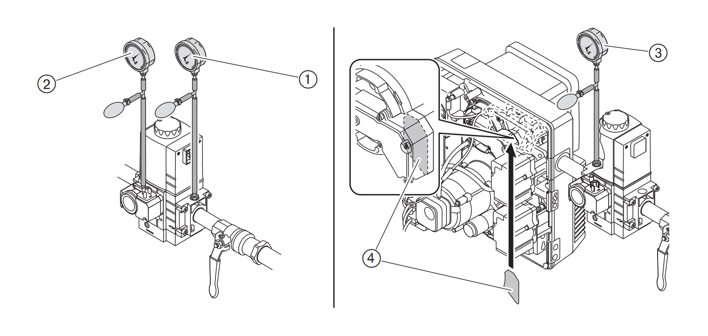
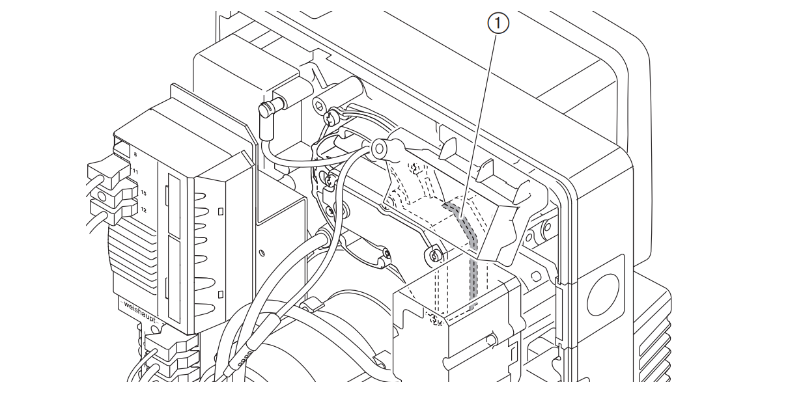
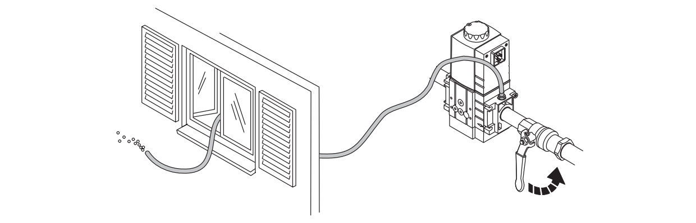
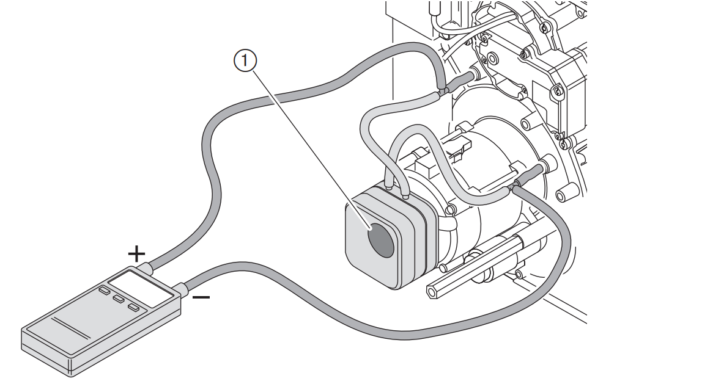

Ввод в эксплуатацию
Условия
Пуско-наладочные работы разрешается проводить только специально обученному квалифицированному персоналу. Только корректно проведенные пуско-наладочные работы гарантируют надежность эксплуатации горелки.
Перед началом настройки убедиться, что
- все работы по монтажу и подключению завершены и проверены
- свежего воздуха на подаче достаточно, при необходимости использовать систему подачи воздуха из других помещений или извне
- воздушный зазор между пламенной трубой и теплогенератором заизолирован
- теплогенератор полностью заполнен теплоносителем
- все устройства регулирования, управления, а также предохранительные устройства исправны и правильно настроены
- имеется место для измерения состава дымовых газов
- теплогенератор и участок дымохода до отверстия для измерения герметичны (присосы негативно влияют на результаты измерения)
- соблюдаются указания по эксплуатации теплогенератора
- обеспечен теплосъем
В зависимости от условий эксплуатации могут потребоваться дополнительные проверки. Кроме того, необходимо соблюдать предписания по эксплуатации отдельных блоков установки.
Проверка давления подключения газа
К минимальному давлению подключения газа необходимо прибавить давление в камере сгорания в мбар. Давление подключения должно быть не ниже 15 мбар. Максимальное давление подключения перед шаровым краном составляет 300 мбар
Превышение максимального давления подключения может разрушить арматуру и привести к взрыву.
Проверка газовой арматуры на герметичность
Проверку герметичности необходимо проводить:
- перед пуско-наладкой горелки
- после любых работ на горелке
- контрольное давление : 100-150 мбар
- Время ожидания для выравнивания давления: 5 минут
- Контрольное время: 5 минут
- Допустимое снижение давления: макс 1 мбар
Первая стадия проверки
Для первой фазы проверки на регуляторе должен быть подключен манометр. В ходе первой стадии проверяется арматура от шарового крана до первого клапана в мультиблоке.
- Выключить горелку.
- Закрыть газовый шаровой кран
- Подключить проверочное устройство
- Открыть место измерения между первым и вторым клапаном
- Провести проверку
Вторая стадия проверки
- Подключить проверочное устройство.
- Провести проверку
Третья стадия проверки
В третьей фазе проверяется участок арматуры от мультиблока до газового дросселя.
- Снять смесительное устройство
- Закрыть газовый шаровой кран
- Установить заглушку 4(рис)
- Смонтировать смесительное устройство.
- Подключить проверочное устройство
- Провести проверку
- Закрыть все места измерения
- Снова снять заглушку

Четвертая стадия проверки
В четвёртой фазе проверяется переход к смесительному устройству (1 на рис.) на герметичность. Фаза проверки проводится во время или после настройки горелки. Для проверки необходим спрей-течеискатель или электронный прибор - индикатор утечки газа.
Проверить все блоки, переходники и места измерения на арматуре между мультиблоком и горелкой. Результат проверки герметичности занести в технический акт.

Удаление воздуха из газовой арматуры
- К измерительному ниппелю подключить шланг для сброса воздуха
- Шланг для сброса воздуха вывести за пределы помещения
- Медленно открыть газовый шаровой кран
- Газо-воздушная смесь из арматуры выйдет через шланг в атмосферу
- Закрыть газовый шаровой кран
- Снять шланг и сразу же закрыть место измерения
- Проверочной горелкой проверить арматуру на отсутствие воздуха
- Проверочной горелкой проверить арматуру на отсутствие воздуха
- Воздух должен быть полностью удалён из газопровода

Настройка реле давления воздуха
При настройке горелки точку срабатывания необходимо проверить и при необходимости перенастроить.
- Для измерения дифференциального давления подключить манометр
- Запустить горелку
- Провести измерение дифференциального давления по всему диапазону мощности горелки и определить минимальное значение
- Определить и установить точку отключения (80% от минимального дифференциального давления).

Заключительные работы
- Проверить функции всех регуляторов, управляющих и предохранительных устройств на работающей установке и провести их настройку
- Снять все манометры и закрыть места измерений
- Завершить проверку герметичности газовой арматуры (четвёртая фаза проверки). Параметры сжигания и настройки занести в протокол и / или карту параметров.
- Значения настройки записать на прилагаемой наклейке и наклеить её на корпусе горелки. Установить крышку горелки
- Проинформировать эксплуатационника об условиях работы установки
- Передать эксплуатационнику инструкцию по монтажу и эксплуатации и сообщить о том, что она должна находиться в котельной рядом с горелкой
- Проинформировать эксплуатационника о необходимости проведения ежегодного сервисного обслуживания горелки